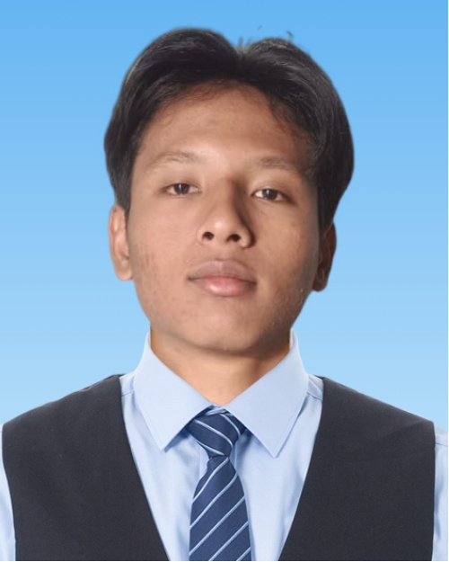

Tugas Pemrograman Web 1
Proyek ini adalah pembuatan halaman profil dan form interaktif menggunakan struktur elemen semantik HTML, tabel terstruktur, dan beberapa elemen input form.
Semarang, Indonesia | alvindo.tata@email.com | 08xx-xxxx-xxxx

Halo! Nama saya Alvindo Tata Ardiansyah. Saya adalah mahasiswa aktif Program Studi Sistem Informasi di Universitas Dian Nuswantoro, dengan latar belakang pendidikan di bidang Teknik Komputer dan Jaringan. Saya memiliki ketertarikan yang besar dalam bidang pengembangan aplikasi web, perancangan basis data, serta analisis sistem informasi. Saya senang mempelajari teknologi baru yang dapat membantu menyelesaikan berbagai permasalahan di bidang teknologi informasi. Selain itu, saya juga tertarik untuk mengembangkan kemampuan dalam pemrograman dan pembuatan sistem yang mudah digunakan. Selama menjadi mahasiswa, saya terus berusaha meningkatkan pengetahuan dan keterampilan melalui berbagai tugas dan proyek perkuliahan, serta aktif mencari pengalaman tambahan di luar kelas untuk menunjang kesiapan memasuki dunia kerja.
Halaman ini dibuat menggunakan HTML5 murni tanpa menggunakan CSS sebagai latihan memahami struktur dasar web. Melalui halaman ini, saya juga menjadikannya sebagai CV digital sederhana yang merangkum latar belakang pendidikan, keahlian, pengalaman, dan proyek yang pernah saya kerjakan, sehingga dapat menjadi bahan pertimbangan saat melamar magang maupun pekerjaan di bidang teknologi informasi.
| Tingkat Pendidikan | Nama Instansi / Sekolah | Tahun | Keterangan |
|---|---|---|---|
| Sekolah Menengah Kejuruan (SMK) | SMK Setiabudhi Semarang | 2022 - 2025 | Teknik Komputer & Jaringan |
| Perguruan Tinggi (S1) | Universitas Dian Nuswantoro | 2025 - sekarang | Sistem Informasi |
| Organisasi | Peran / Kegiatan |
|---|---|
| HM SISFO UDINUS | Sie Acara (SiTalk, ICBC), Sie Sponsor (SENSASI), Ketua Pelaksana Bukber. Saat ini terlibat dalam SISGATH 2026. |
| IAYC (Ikatan Anak Asuh YKAI Colruyt) | Aktif dalam kegiatan organisasi, capacity building, PAB, rapat besar, kegiatan sosial, dan publikasi. |
| HMPA | Ketua Pelaksana serta Sie Logistik dalam kegiatan HAN. |
Proyek ini adalah pembuatan halaman profil dan form interaktif menggunakan struktur elemen semantik HTML, tabel terstruktur, dan beberapa elemen input form.
Silakan isi form di bawah ini untuk mengirimkan pesan: